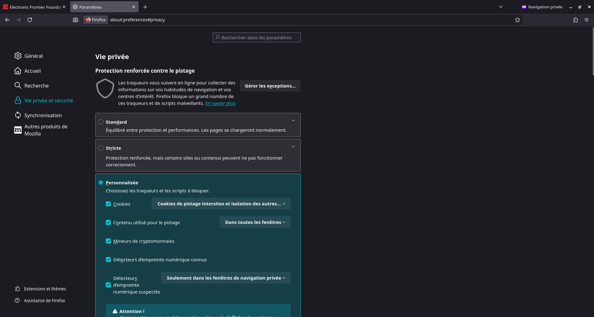
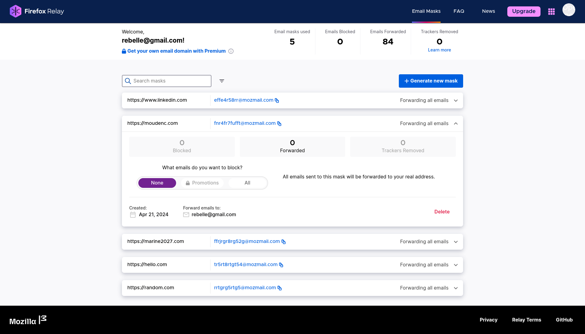
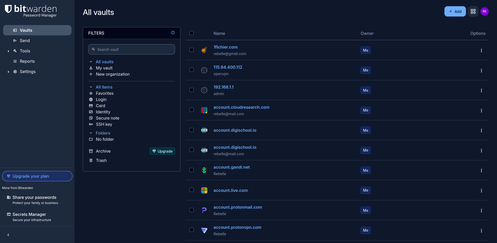
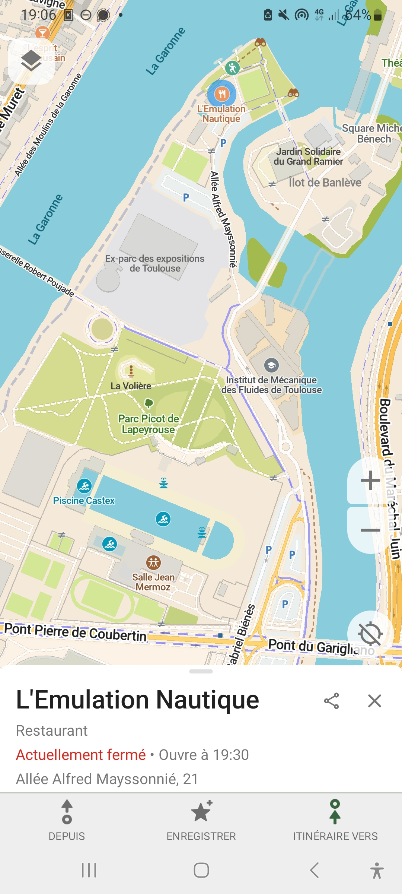
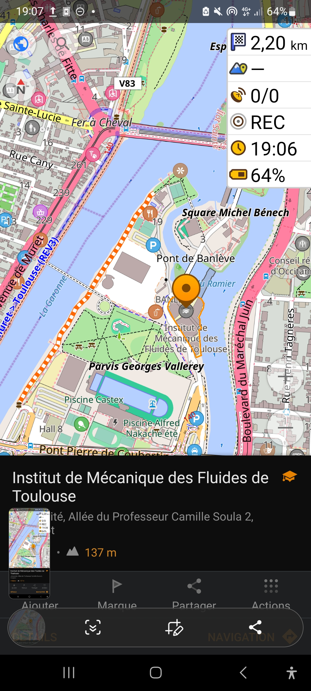

- Diaporama : cliquer sur la flèche bleue à droite pour continuer
- Plaquette : Lien vers la plaquette
- Trame de formation : Lien vers la trame de formation
- liens pour approfondir : Lien vers le document de liens
Atelier d'autodéfense numérique
Secu Num 1 :Reprendre le contrôle de sa vie numérique
ÉLÉMENTS THÉORIQUES
Mise au point sur le vocabulaire
Faire des étiquettes avec le nom / définitions / exemples mélangés et laisser les gens remettre dans l'ordre.
- Système d'exploitation :
- Internet :
- Navigateur web :
- Moteur de recherche :
Mise au point sur le vocabulaire
- Système d'exploitation : Logiciels gérant les ressources de l'ordinateur (ex: Windows, MacOS, Ubuntu / Android, iOS).
- Internet : Réseau informatique mondial public.
- Navigateur web : Logiciel pour consulter des sites (ex: Edge, Chrome, Firefox, Safari).
- Moteur de recherche : Service web de recherche (ex: Google, Bing, Startpage, Qwant, DuckDuckGo).
Exemple
La vie privée ? Kesako ?
- Vie privée :
- Confidentialité : .
- Sécurité :
- Anonymat :
- Pseudonymat :
La vie privée ? Kesako ?
- Vie privée : Sphère d'intimité à l'abri des regards. Préserver sa vie privée ≠ avoir des choses illégales à cacher (ex: fermer la porte des toilettes).
- Confidentialité : S'assurer que l'information est accessible uniquement aux personnes autorisées.
- Sécurité : Assurance de l'authenticité des interlocuteurs et de l'intégrité des échanges.
- Anonymat : Capacité d'agir sans identifiant permanent.
- Pseudonymat : Capacité d'agir avec un identifiant permanent non relié à votre identité réelle.
Modèle de menace
- QUOI ? Que souhaitez-vous protéger ?
- DE QUI ? Qui peut mettre en danger cet élément ?
- COMMENT ? De quelle manière ?
- PROBABILITÉ ? Quelle chance que cela arrive ?
- CONSÉQUENCES ? Qu'avez-vous à perdre ?
- QUE FAIRE ? Quel compromis suis-je prêt·e à accepter ?
Le capitalisme de surveillance
Des entreprises accumulent et croisent des données pour créer des profils.
Personne n'est "sans intérêt" : Analyse Proton sur les enchères publicitaires Google (USA) :
- Moyenne : 1605 $ / an / utilisateur US
- Max : 17 929 $ (35-44 ans, cadre, PC)
- Min : 31 $ (14-24 ans, faible revenu, Android)
Pour la France, diviser approximativement par 2.
ATELIER - DATA BROKERS
Data Brokers: Entreprises qui collectent, traitent et vendent des données personnelles.
Objectif : Reconstituer le profil le plus complet possible de Bidule.
Groupe 1
- Identifiant publicitaire : gecko_rebelle@proton.me = bernard.coucou@gmail.com = BBdu31
- Confirmé par le user-agent
- Localisation : quartier résidentiel : Lieu d'habitation et devant la mairie : Lieu de travail ?
- Pas de lien avéré avec Bibibou ou Kiki
Groupe 2
- Identifiant publicitaire : bernard_coquin@gmail.com = bernard.coucou@gmail.com
- Nouveau pseudo : "Playmobil" sur le bon coin
- De nombreuses connexions devant la mairie : Confirme le lieu de travail ou alors il adore aller sur la place du Capitole
- Pas de lien avéré avec Bibibou ou Kiki
Groupe 3
- Identifiant publicitaire : bernard.h@gmail.com = BBdu31
- Compte Matermost mais on ne connait pas le pseudo...
- De nombreuses connexions devant la mairie : Confirme le lieu de travail ou alors il adore aller sur la place du Capitole
- Pas de lien avéré avec Bibibou ou Kiki
Apparté rapide : Osint
- Organigramme de la mairie + adresse mail institutionnelle : Prénom et Nom de bernard H...
- Compte Matermost sans pseudo : avec la date de première connexion, possible
- Prénom/Nom + Lieu d'habitation = Adresse exacte (n° appartement)
- Recherche automatique sur les réseaux avec pseudo : Loisirs / habitudes
- Cherche des rencontres (Tinder) : Possibilité de le rencontrer par ce biais et d'obtenir un visage ou leboncoin
Collecter des données
- Cookies et traceurs.
- Identifiants publicitaires.
- Empreinte numérique (fingerprinting).
- Application mobiles :On en reparlera plus tard.
Traiter les données
- 1 Donnée = Nul
- Mais 1 donnée + 1 donnée = Mine d'information.
Exploitation des données
- Publicités ciblées.
- Ajustement de tarifs par des assureurs / mutuelles.
- Ciblage politique sur-mesure.
- Surveillance étatique et changement de cadre légal futur.
OUTILS PRATIQUES : SE PROTÉGER
Navigation Web : Fingerprinting
Techniques de suivi identifiant un appareil de façon unique grâce à la combinaison de ses caractéristiques (User agent, IP, Canvas, polices, extensions, etc.).
- Soit on blinde le navigateur (extensions, scripts bloqués) = profil très protecteur mais empreinte unique.
- Soit on cherche à se fondre dans la masse = moins unique mais tracking omniprésent.
Navigateurs Web
- Firefox sur Mobile and PC
- Ajout d'extentions de blocage de publicité
- Activer la protection renforcée contre le pistage

Navigateur Firefox

Ressources 🌐 www.firefox.com- Catégorie : Navigateur Web / Protection de la vie privée
- Points forts : Supporte les vrais bloqueurs de publicité, personnalisable, bloqueur de pisteurs intégré.
- Usage conseillé : Au quotidien
Ublock Origin
- Catégorie : Bloqueur de Publicité / Protection de la vie privée
- Points forts : Le seul vrai bloqueur de publicité, fonctionne sur Youtube.
- Usage conseillé : Au quotidien
Moteurs de recherche
Problème : Suivi exhaustif des requêtes et revente aux tiers.
Solution : Changer de moteur de recherche par défaut.
- DuckDuckGo
- Startpage
- Qwant / Ecosia
Le VPN
Tunnel sécurisé vers un serveur intermédiaire. Masque le trafic à votre FAI, mais déplace la confiance vers le fournisseur VPN.
- Avantages : Masque l'IP au site final, contourne certains blocages simples.
- Limites : Un VPN ne vous rend pas anonyme et n'empêche pas le fingerprinting.
Comptes en ligne - Emails
L'email transite en clair sur le réseau. L'utiliser partout crée un identifiant unique universel.
- Créer plusieurs comptes emails pour différents usages (personnel, professionnel, etc.).
- Alias email : Utiliser des adresses jetables/dérivées (Firefox Relay, Simplelogin, SpamGourmet).
Firefox Relay

Ressources 🌐 relay.firefox.com- Catégorie : Service d'alias
- Points forts : Intégré à Firefox, jolie UI
- Usage conseillé : Pour commencer, au quotidien
- Pour les plus deter : SpamGourmet
Comptes en ligne - Mots de passe
- Utiliser un gestionnaire de mots de passe pour générer et stocker des mots de passe complexes et uniques.
- Mot de passe aléatoire ou méthode Diceware pour créer des mots de passe plus sécurisés.
- Mot de passe du type C0urg$tt$. C'est NUL
Bitwarden / Vaultwarden

Ressources 🌐 bitwarden.com/- Catégorie : Gestionnaire de mot de passe avec synchronisation
- Points forts : Open-Source, E2EE, de confiance
- Usage conseillé : Au quotidien
- Note : Possibilité d'utiliser d'autres hébergeur Bitwarden
Réseaux Sociaux Numériques
- Collecte massive de données croisées (ex: Meta = Facebook + Instagram + WhatsApp).
- Depuis quelques temps : volonté d'obtenir des identités complètes + Scan du visage pour "vérification d'âge". (Reddit + Discord + Youtube)
- Éviter les photos de profil réelles publiques.
- Boycotter les réseaux avec ces pratiques
- Le mieux : tout supprimer...
Le réseau de téléphonie mobile
Géolocalisation & OpenStreetMap
Problèmes des cartes GAFAM : Surveillance continue, ciblage publicitaire, dépendance au cloud.
Alternative : OpenStreetMap (OSM)
- Bien commun collaboratif, libre et gratuit.
- Aucune publicité, aucun traçage.
- Données très précises (points d'eau, sentiers, bancs...).
Applications Cartes recommandées
| Application | Profil | Points forts |
|---|---|---|
| CoMaps | Débutant | Interface épurée, idéale pour remplacer Google Maps au quotidien. |
| OsmAnd | Avancé / Randonnée | Riche en fonctionnalités (enregistrements GPX, courbes de niveau). |
CoMaps

Ressources 🌐 www.comaps.app- Catégorie : Application de navigation
- Points forts : Open-Source, Simple
- Usage conseillé : Au quotidien
- Attention : Recherche exacte seulement
OSMAnd

Ressources 🌐 osmand.net- Catégorie : Application de navigation
- Points forts : Open-Source, Complète
- Usage : Au quotidien, impossible de s'en passer une fois qu'on l'a prise en main
- Attention : Télécharger depuis FDroid pour avoir la version payante gratuitement.
Communications
Communications :
Messageries chiffrées (E2EE)
Les SMS et appels classiques transitent en clair sur le réseau mobile, dont on vient de parler.
Privilégier Signal.
Attention : WhatsApp chiffre les contenus mais collectent énormément de métadonnées !

Signal
- Catégorie : Messagerie instantanée
- Points forts : E2EE, respect de la vie privée
- Usage conseillé : Au quotidien, surtout militant
- Pour les plus deter : Convertir votre famille
Permissions des applications
Méfiez-vous des applications demandant des accès injustifiés (ex: contacts ou GPS pour un jeu mobile).
- Exodus Privacy : Analysez votre smartphone pour découvrir les pisteurs (trackers) et permissions cachés dans vos applications.
- Aurora Store : Alternative au Google Play Store permettant de voir les pisteurs avant d'installer une application.
- F-Droid : Magasin d'applications 100% open-source et sans trackers (ex: la suite d'applications Fossify).
Conclusion ?
On évite d'installer une application quand on peut faire la même chose avec un navigateur web.| Activité | Classique | Alternatives conseillées |
|---|---|---|
| Messagerie | WhatsApp, Messenger | Signal, DeltaChat |
| E-mails | Gmail, Outlook | Proton Mail, Tutanota, Infomaniak |
| Cloud | Drive, iCloud | Proton Drive, kDrive |
| GPS | Google Maps | CoMaps, OsmAnd |
| Bureautique | MS Office, Google Docs | LibreOffice, CryptPad |
RÉSUMÉ - Les Priorités
1. Sécuriser les accès critiques
- Installer un gestionnaire de mots de passe.
- Activer la double authentification (2FA TOTP).
RÉSUMÉ - Les Priorités
2. Blinder la navigation quotidienne
- Utiliser Firefox (sur PC et Mobile).
- Installer uBlock Origin.
- Moteur de recherche par défaut : DuckDuckGo ou Startpage.
RÉSUMÉ - Les Priorités
3. Migrer vers un écosystème sain
- Passer sur Signal.
- Créer une adresse email éthique (Proton, Infomaniak, etc.).
- Utiliser CryptPad / LibreOffice.
RÉSUMÉ - Les Priorités
4. Chiffrer & Masquer
- utiliser un VPN si vous voulez.
- Utiliser des alias de courriels (Firefox Relay).
CONCLUSION
"Loi de Pareto : Agir sur 20% des causes permet de résoudre 80% des problèmes."
- Pas besoin de devenir paranoïaque.
- Les habitudes se changent petit à petit pour être durables.
- Comprendre les technologies est la meilleure façon de ne plus se faire manipuler !
- Diaporama : cliquer sur la flèche bleue à droite pour continuer
- Trame de formation : Lien vers la trame de formation
- liens pour approfondir : Lien vers le document de liens